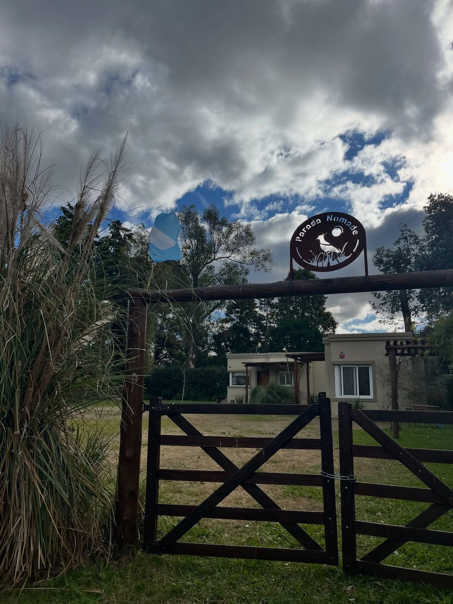
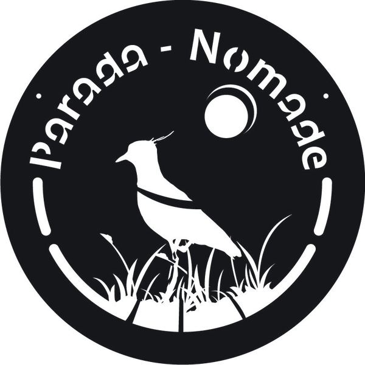
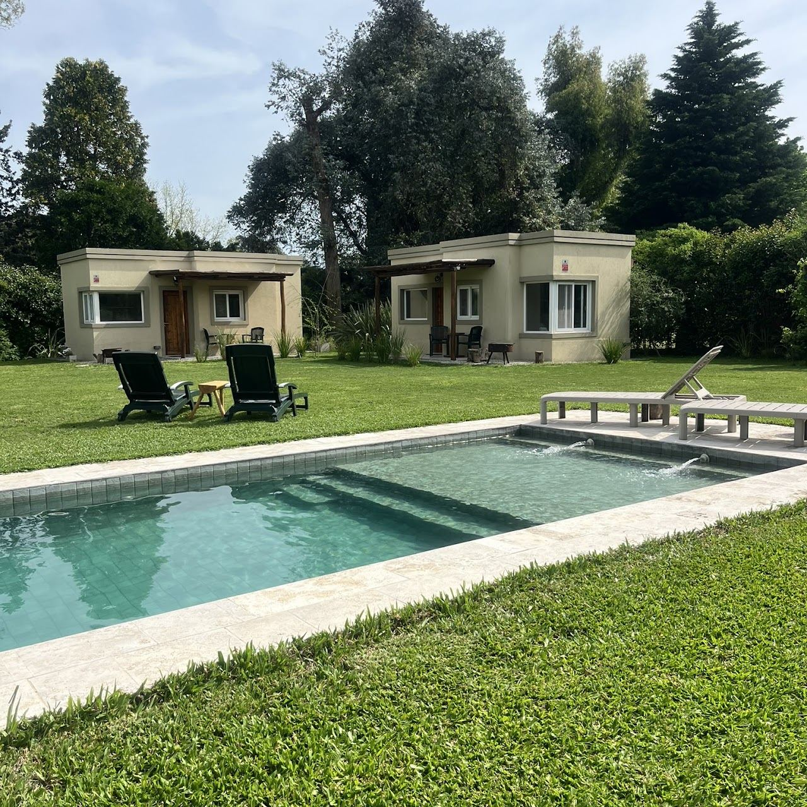
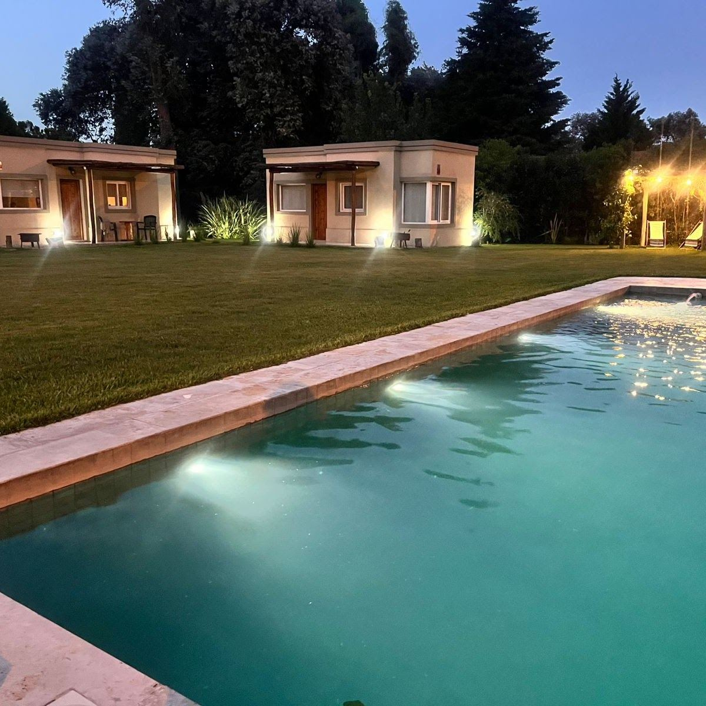
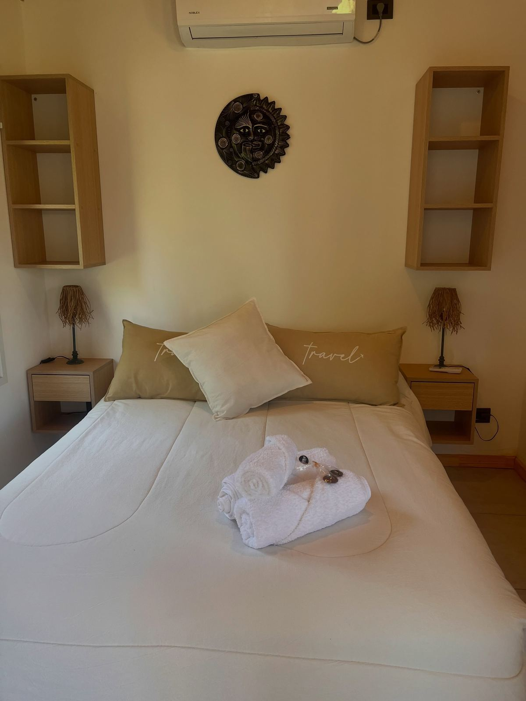
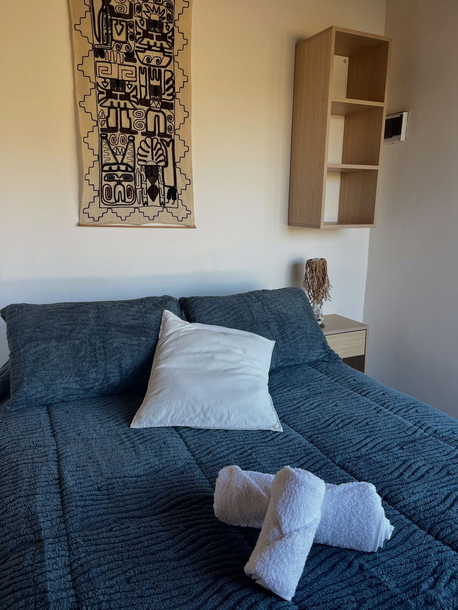
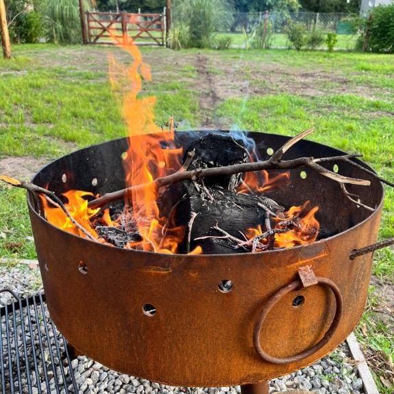

Tu identidad, no la de un tema
La tipografía calada sale del cartel de la tranquera, y los colores de la pileta y las brasas. Alguien que entra al sitio y después llega a la parada siente que es el mismo lugar.

Propuesta webEl sitio ya está diseñado y funcionando. Esta propuesta reúne lo que tiene, lo que le sumamos después de la charla y lo que cuesta ponerlo online con tu propio dominio.

El sitio, tal como está hoy
Lo diseñé desde cero mirando tus fotos, tu cartel de chapa y la forma en que contás la experiencia. Estas son las tres cosas que más lo distinguen.

La tipografía calada sale del cartel de la tranquera, y los colores de la pileta y las brasas. Alguien que entra al sitio y después llega a la parada siente que es el mismo lugar.

La sección «Un día en la parada» va del desayuno a los fogones. Mientras bajás, el sol cruza un arco y el sitio cambia de color de la mañana a la noche.

El huésped elige loft, cantidad de personas y fechas, y se le abre WhatsApp con el mensaje ya escrito, noches incluidas. Se terminó el «hola, ¿precio?» sin datos.
Lo que charlamos el 3 de noviembre
Estos son los cambios que me pediste en la reunión. No se cobran aparte: entran en el mismo proyecto.
Una sección con lo que dicen quienes ya pararon ahí. Es lo primero que mira alguien que todavía no te conoce. Uso reseñas reales que me pases, de Google, Booking, Airbnb o mensajes.
Así se vería · las reseñas reales las cargo con lo que me pases
Acá va la reseña de un huésped, con sus palabras.
Nombre del huésped · Google · mes y añoOtra reseña real, por ejemplo sobre el desayuno o la pileta.
Nombre del huésped · Booking · mes y añoUn mapa dentro del sitio para que el huésped vea dónde queda la parada y saque la ruta desde su casa sin salir de la página. Es este mismo:
Queda fijo en una esquina en todas las secciones, así nadie tiene que volver arriba para escribirte. Abajo a la derecha de esta página tenés uno funcionando: probalo.
Suma su ficha con fotos, capacidad y botón de consulta. También se agrega al formulario, con la opción de reservar varios lofts para grupos más grandes.

Para el loft nuevo voy a necesitar fotos, nombre, capacidad y camas. Para las reseñas, links o capturas de las que quieras mostrar.
Después de lanzarlo
Con la gestión mensual (opcional) me encargo del sitio mientras vos atendés la parada.
Calculadora
Por ejemplo, de noviembre a marzo, que es la temporada de pileta. Tocá los meses para sumarlos o sacarlos.
La inversión
Pagás una vez y el sitio queda online, a tu nombre. La gestión mensual es aparte y la sumás solo si querés.
Opcional · mes a mes
+ USD 25 / mesGestión mensual: hosting, cambios chicos y reporte de visitas y consultas. Sin permanencia: la activás y la pausás cuando quieras.
El dominio (por ejemplo, paradanomade.com.ar) se registra a nombre de Parada Nómade. Su costo de registro se paga aparte, directamente a quien lo registra.
Los cambios empiezan cuando se acredita la seña y tengo el material del loft nuevo y las reseñas.
Lo que no está en esta lista, como secciones nuevas grandes o un sistema de reservas con pago online, se cotiza aparte.
Hoja de ruta
Cinco paradas, en este orden.
Me avisás que avanzamos y transferís la seña del 50%.
VosFotos y datos del loft nuevo, las reseñas que quieras mostrar y el dominio que te guste.
VosSumo reseñas, mapa, WhatsApp flotante y el loft nuevo. Lo revisás y hacemos hasta 2 rondas de ajustes.
YoPublico el sitio en tu dominio, dejo listas las estadísticas y el registro en Google, y pagás el 50% restante.
Los dosDesde ahí, las consultas te llegan completas por WhatsApp. Si sumás la gestión, del sitio me ocupo yo.
La parada¿Avanzamos?
Cuando lo decidas, escribime y arrancamos. Si te queda alguna duda sobre la propuesta, también la charlamos por WhatsApp.

Diseño web
Diseño sitios a medida para hospedajes y negocios locales, y después me ocupo de que sigan funcionando. ¿Querés ver otros trabajos? Pedí el tuyo o mirá referencias y precios.
Ver referencias y precios